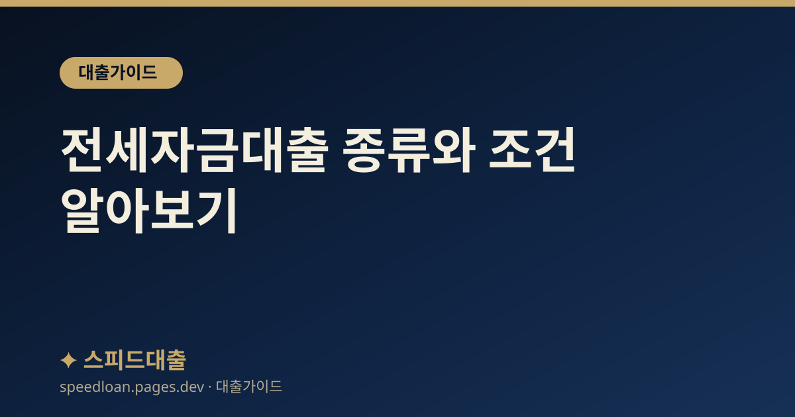

전세자금대출 종류와 조건 알아보기
전세자금대출의 종류와 기본 조건, 필요서류, 한도에 영향을 주는 요소와 신청 전 확인사항을 정리했습니다.

전세자금대출이란
전세자금대출은 전세 보증금을 마련하기 위해 받는 대출로, 세입자가 보증금의 상당 부분을 금융회사에서 빌리고 계약 기간 동안 이자를 내다가 계약 종료 시 보증금을 돌려받아 상환하는 구조가 일반적입니다. 일반 신용대출과 달리 임대차계약과 보증기관의 보증을 바탕으로 하기 때문에, 준비할 서류와 확인할 조건이 조금 다릅니다.
월세와 달리 목돈이 필요한 전세는 대출 의존도가 높기 때문에, 계약을 서두르기 전에 내가 받을 수 있는 상품과 조건을 먼저 파악하는 것이 중요합니다. 처음 전세를 구하는 분이라면 대출 필요서류 안내와 함께 읽어 두면 준비가 한결 수월합니다.
전세자금대출의 종류
크게 정책(기금) 상품과 은행 일반 상품으로 나뉩니다. 어떤 유형이 유리한지는 소득·나이·보증금 규모에 따라 달라지므로 자격부터 확인하는 것이 좋습니다.
- 정책(주택도시기금) 상품: 버팀목 전세자금대출처럼 무주택 서민·청년을 위한 상품으로, 소득·보증금 요건을 충족하면 상대적으로 낮은 금리를 기대할 수 있습니다.
- 은행 일반 전세대출: 주택도시보증공사(HUG), 한국주택금융공사(HF), 서울보증(SGI) 등 보증기관의 보증을 바탕으로 취급되며 소득·신용에 따라 조건이 달라집니다.
- 청년·신혼부부 대상 상품: 연령·혼인 등 요건을 충족하면 별도 우대가 적용되는 상품이 있으므로 해당 여부를 먼저 확인하세요.
같은 전세대출이라도 어떤 보증기관을 이용하느냐에 따라 한도와 금리, 필요 요건이 달라지므로, 한 곳만 보지 말고 여러 상품을 비교하는 것이 좋습니다.
한도와 조건에 영향을 주는 요소
- 보증금과 보증 비율: 보증기관이 보증하는 비율에 따라 빌릴 수 있는 금액이 달라집니다.
- 소득과 기존 부채: 상환 능력을 보기 때문에 소득과 기존 대출 부담(DSR)이 함께 반영됩니다.
- 신용점수와 이력: 신용점수 관리 상태가 금리와 승인에 영향을 줄 수 있습니다.
- 주택 유형과 계약 내용: 대상 주택 요건과 임대차계약의 적정성도 확인 대상입니다.
내 소득으로 대략 얼마까지 가능한지 감을 잡고 싶다면 연봉별 대출한도 글도 참고하세요.
필요서류와 신청 절차
- 임대차(전세)계약서와 계약금 납입 영수증
- 소득 증빙 서류(재직·소득 관련)와 주민등록등본 등 신분·거주 확인 서류
- 대상 주택 관련 서류(등기부등본 등)
보통 계약 후 잔금일 이전에 신청하며, 보증기관 심사와 은행 심사를 거쳐 실행됩니다. 심사에 시간이 걸릴 수 있으므로 잔금일에 맞춰 일정을 넉넉히 두고 준비하는 것이 안전합니다. 계약서를 쓰기 전에 미리 은행에 대출 가능 여부를 상담해 두면 잔금일에 자금이 부족해지는 상황을 피할 수 있습니다.
전세대출 이용 중 알아둘 점
전세대출은 실행으로 끝이 아니라 계약 기간 동안 관리가 필요합니다. 특히 보증금을 안전하게 돌려받는 것이 중요하므로, 전세보증금 반환보증 가입 여부와 조건을 함께 확인하면 위험을 줄일 수 있습니다.
- 전세보증금 반환보증: 집주인이 보증금을 돌려주지 못할 때를 대비하는 보증으로, 가입 요건과 보증료를 확인하세요.
- 계약 갱신: 재계약·갱신 시 대출도 연장 절차가 필요할 수 있으므로 만기 전에 은행에 문의하세요.
- 임대인(집주인) 변경: 계약 기간 중 집주인이 바뀌어도 대출·보증 조건에 영향이 없는지 확인하세요.
신청 전 확인사항
- 대상 주택에 근저당 등 권리관계가 복잡하지 않은지 등기부등본으로 확인하세요.
- 집주인(임대인)의 협조가 필요한 서류가 있는지 미리 확인하세요.
- 계약 종료 시 보증금 반환과 대출 상환 일정이 어긋나지 않도록 계획하세요.
- 광고의 누구나 가능 문구보다 내 조건으로 조회한 결과를 기준으로 판단하세요.
승인이 걱정된다면 대출 거절 이유를 먼저 확인해 준비 상태를 점검해 보세요.
자주 묻는 질문
전세자금대출은 보증금의 몇 %까지 받을 수 있나요?
보증기관과 상품, 신청자의 소득·신용에 따라 달라지므로 일률적으로 말하기 어렵습니다. 정책 상품과 은행 상품의 보증 비율이 서로 다르니 해당 상품 안내와 은행 상담으로 확인하는 것이 정확합니다.
무주택자가 아니어도 받을 수 있나요?
상품마다 요건이 다릅니다. 정책(기금) 상품은 무주택 세대주 요건이 있는 경우가 많고, 은행 상품은 상대적으로 요건이 넓을 수 있습니다. 자격 요건을 먼저 확인하세요.
전세보증금 반환보증은 꼭 가입해야 하나요?
의무는 아니지만, 보증금을 돌려받지 못할 위험에 대비할 수 있어 많은 세입자가 활용합니다. 가입 요건과 보증료를 확인하고 필요에 따라 선택하세요.
전세대출도 DSR에 포함되나요?
반영 방식은 상품과 규제에 따라 달라질 수 있습니다. 구체적인 적용 기준은 금융위원회·금융감독원 발표와 취급 은행 안내를 확인하시기 바랍니다.
공식 참고 기관
본 사이트의 콘텐츠는 아래 공공·공식 기관의 공개 자료를 참고하여 작성하며, 구체적인 조건과 최신 제도는 해당 기관에서 직접 확인하시기 바랍니다.
본 사이트는 대출을 직접 제공하거나 중개하지 않으며, 금융상품 가입을 권유하지 않습니다. 모든 정보는 일반적인 참고용이며, 실제 대출 가능 여부, 한도, 금리, 조건은 금융회사 심사와 개인 신용상태에 따라 달라질 수 있습니다.